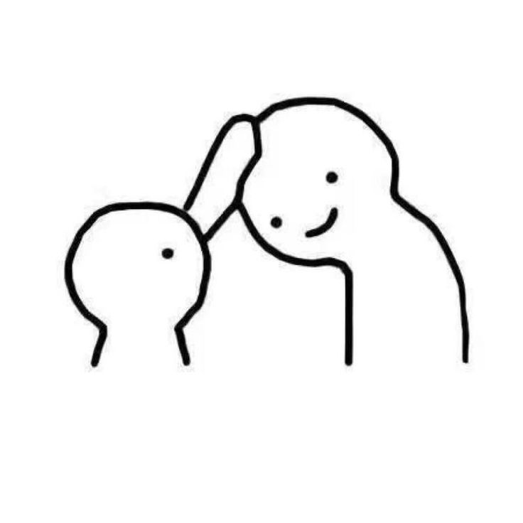
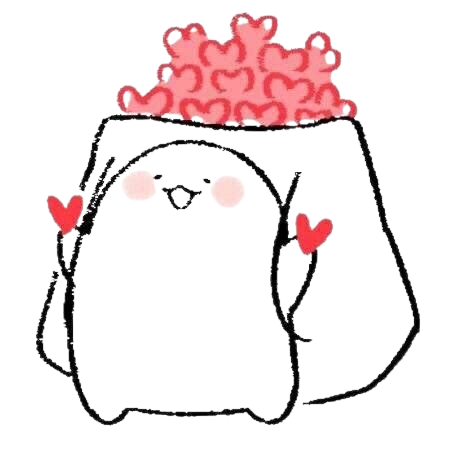
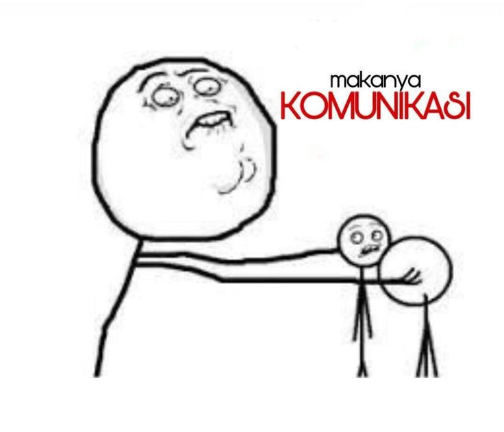
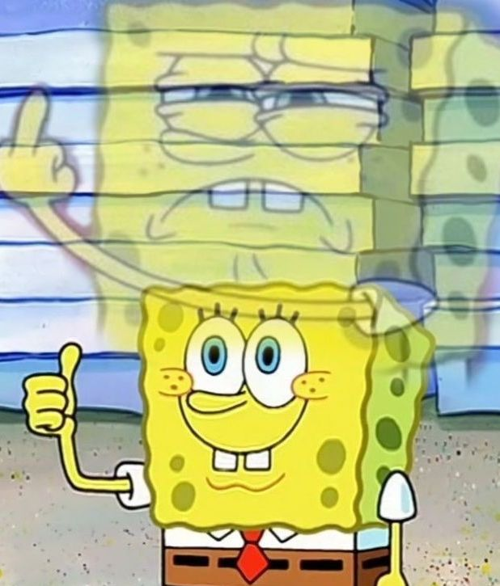
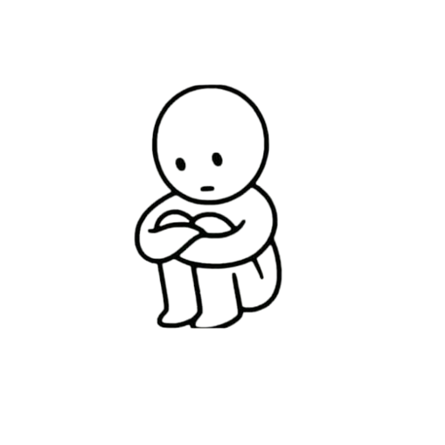

masak air biar mateng,
assalamualaikum gantengg
jadi tujuan aku di web yang kali ini itu karna mau ungkapin beberapa hal mengingat aku niat kirim ini di hari kita tepat 9 bulan anjayy ga nyangkaa dah 9 bulan ajah
dibaca pelan-pelan aja ya sayangg
halaw kamu masih semangat kann untuk semuanya aku harap iyaa dan selaluu.
sedikit pesann dari akuu semangat terus ya sayangg aku tau kamu bisa lewatinnya karena sesungguhnya masalah itu pasti berlalu, berlalu lalang hehe wkkwkwk.
aku gatau ya kamu udah bosen atau udh biasa aja denger kata-kata kek gitu soalnya aku gitu hehe tapi kamu jangan sampe yahh.
jangan lupa buat selalu jaga kesehatan, selalu hati-hati kalau lagi ngerjain sesuatu, hati-hati sama barang bawaan, jangan lupa buat berkabar sama orang rumah, aku juga kabarin hehe.
eumm aku tau pasti kamu ada rasa capenya di tambah aku yang mungkin keliatan jadi agak cuek yahh hehe maaf yaa nanti aku ceritain di akhir kenapa nya.
hmm ga bosen aku buat bilang kalau aku selalu nungguin kamu sampe hal itu kelar aku gatau detailnya dan ga berharap tau karna itu hal pribadi kamu yang ga harus aku tau
yang dimana aku cukup buat sekedar tau aja. semangatt terus ya sayangg lopyuu.

jangan capek yaa bacanya soalnya masih aga banyak lagi hehe
kangen kangen kangen kangen kangen kangen kangen kangen kangen kangen kangen kangen kangen kangen kangen kangen kangen kangen kangen kangen kangen kangen kangen kangen kangen kangen kangen kangen kangen kangen kangen kangen kangen kangen kangen kangen kangen kangen kangen kangen kangen kangen kangen kangen kangen kangen kangen kangen kangen kangen kangen kangen kangen kangen kangen kangen kangen kangen kangen kangen kangen kangen kangen kangen kangen kangen kangen kangen kangen kangen kangen kangen kangen kangen kangen kangen kangen kangen kangen kangen kangen kangen kangen kangen kangen kangen kangen kangen kangen kangen kangen kangen kangen kangen kangen kangen kangen kangen kangen kangen kangen kangen kangen kangen kangen kangen kangen kangen kangen kangen kangen kangen kangen kangen kangen kangen kangen kangen kangen kangen kangen kangen kangen kangen kangen kangen kangen kangen kangen kangen kangen kangen kangen kangen kangen kangen kangen kangen kangen kangen kangen kangen kangen kangen kangen kangen kangen kangen kangen kangen kangen kangen kangen kangen kangen kangen kangen kangen kangen kangen kangen kangen kangen kangen kangen kangen kangen kangen kangen kangen kangen kangen kangen kangen kangen kangen kangen kangen kangen kangen kangen kangen kangen kangen kangen kangen kangen kangen kangen kangen kangen kangen kangen kangen kangen kangen kangen kangen kangen kangen kangen kangen kangen kangen kangen kangen kangen kangen kangen kangen kangen kangen kangen kangen kangen kangen kangen kangen kangen kangen kangen kangen kangen kangen kangen kangen kangen kangen kangen kangen kangen kangen kangen kangen kangen kangen kangen kangen kangen kangen kangen kangen kangen kangen kangen kangen kangen kangen kangen kangen kangen kangen kangen kangen kangen kangen kangen kangen kangen kangen kangen kangen kangen kangen kangen kangen kangen kangen kangen kangen kangen kangen kangen kangen kangen kangen kangen kangen kangen kangen kangen kangen kangen kangen kangen kangen kangen kangen kangen kangen kangen kangen kangen kangen kangen kangen kangen kangen kangen kangen kangen kangen kangen kangen kangen kangen kangen kangen kangen kangen kangen kangen kangen kangen kangen kangen kangen kangen kangen kangen kangen kangen kangen kangen kangen kangen kangen kangen kangen kangen kangen kangen kangen kangen kangen kangen kangen kangen kangen kangen kangen kangen kangen kangen kangen kangen kangen kangen kangen kangen kangen kangen kangen kangen kangen kangen kangen kangen kangen kangen kangen kangen kangen kangen kangen kangen kangen kangen kangen kangen kangen kangen kangen kangen kangen kangen kangen kangen kangen kangen kangen kangen kangen kangen kangen kangen kangen kangen kangen kangen kangen kangen kangen kangen kangen kangen kangen kangen kangen kangen kangen kangen kangen kangen kangen kangen kangen kangen kangen kangen kangen kangen kangen kangen kangen kangen kangen kangen kangen kangen kangen kangen kangen kangen kangen kangen kangen kangen kangen kangen kangen kangen kangen kangen kangen kangen kangen kangen kangen kangen kangen kangen kangen kangen kangen kangen kangen kangen kangen kangen kangen kangen kangen kangen kangen kangen kangen kangen kangen kangen kangen kangen kangen kangen kangen kangen kangen kangen kangen kangen kangen kangen kangen kangen kangen kangen kangen kangen kangen kangen kangen kangen kangen kangen kangen kangen kangen kangen kangen kangen kangen kangen kangen kangen kangen kangen kangen kangen kangen kangen kangen kangen kangen kangen kangen kangen kangen kangen kangen kangen kangen kangen kangen kangen kangen kangen kangen kangen kangen kangen kangen kangen kangen kangen kangen kangen kangen kangen kangen kangen kangen kangen kangen kangen kangen kangen kangen kangen kangen kangen kangen kangen kangen kangen kangen kangen kangen kangen kangen kangen kangen kangen kangen kangen kangen kangen kangen kangen kangen kangen kangen kangen kangen kangen kangen kangen kangen kangen kangen kangen kangen kangen kangen kangen kangen kangen kangen kangen kangen kangen kangen kangen kangen kangen kangen kangen kangen kangen kangen kangen kangen kangen kangen kangen kangen kangen kangen kangen kangen kangen kangen kangen kangen kangen kangen kangen kangen kangen kangen kangen kangen kangen kangen kangen kangen kangen kangen kangen kangen kangen kangen kangen kangen kangen kangen kangen kangen kangen kangen kangen kangen kangen kangen kangen kangen kangen kangen kangen kangen kangen kangen kangen kangen kangen kangen kangen kangen kangen kangen kangen kangen kangen kangen kangen kangen kangen kangen kangen kangen kangen kangen kangen kangen kangen kangen kangen kangen kangen kangen kangen kangen kangen kangen kangen kangen kangen kangen kangen kangen kangen kangen kangen kangen kangen kangen kangen kangen kangen kangen kangen kangen kangen kangen kangen kangen kangen kangen kangen kangen kangen kangen kangen kangen kangen :(
HEHEHE
wkwk cuma mau menyampaikan hal yang gabisa aku bilang di cht karna gengsi
okehh jadii lagi itu aku abis urus resign tuh sebernya aku takut banget aku kaget dapet perlakuan kek gitu
dan sebenernya mau banget langsung ketemu kamu tapi lagi itu posisi kamu baru pulang kan aku gamau ganggu istirahat kamu
dan yap aku nangis dari pulang makanya sempet ke alfa dulu aga lama itu aku mau supaya tenang di luar biar di rumah ga perlu nangis diem-diem wkwk
hari itu aku bener-bener berharap banget buat ketemu kamu karna rasanya ga lega belum plong rasanya bahkan sampe sekarang aku masi ngerasa ganjel sama hari itu
trus semenjak itu maaf banget aku jadi ngerasa kek ya udah gamau berharap ketemu lagi, maksudnya bukan udah gamau ketemu lagi tapi lebih ke rasa berharapnya buat
ketemu sama kamu tu udah aku kurangin tapi ternyata gabisa hehe soalnya aku se sayang itu sama kamu :( huaa agak lega abis ngetiknya.
kalo kamu mau tau kenapa ga bilang langsung waktu itu hmm aku masih kek syok gitu dan balik lagi gamau ganggu waktu istirahat kamu, lagi itu
juga aku masih kurang fit karna baru enakan kan abis sakit lagi itu kalau kamu inget di tambah dapet kejadian gitu yang ada aku ngomong ga jelas ke kamu ya aku gamau
takut malah sama-sama marah aku gamau.
maaf juga sebenernya waktu hari itu kamu kan ijin main dan bener-bener ninggalin aku akutu kayak kek ya allahh wkwk tapi it's okeyy hidup kamu ga tentang aku terus dan
begitu juga sebaliknya. perlu di ingat kalau aku hanya menyuarakan apa yang ga bisa aku bilang scara langsung ke kamu ya bukan bermaksud nyalahin kamuu
okkeh next? betul ada lagi
hehe selanjutnya yang lagi itu masalah kita kemaren itu
lebih ke kenapa aku segitunya, gapapa kalau kata kamu berlebihan tapi asal kamu tau aja ya aku itu selalu mikir kalau kamu ketemu yang lebih dari aku gimana aku belum siap
kalau harus pisah sama kamu hampir tiap aku ngelamun itu yang aku pikirin tapi ya aku selalu berusaha buat percaya sama kamu walau sebenernya gegara perkataan temen aku yang waktu
itu reuni bilang kalau lingkungan tempat kamu itu ga jauh dari cewe yang begitu yaa aku percaya kamu aku tau kamu ga kayak gitu tapi ga menutup kemungkinan-kemungkinan bagi aku, yaa gimana
si ya yang namanya ovt?? apalagi sekarang lagi ldr dan kamu ada riwayat likein cewe di tambah kemaren tetiba banget aku buka sw kamu isinya dua cewe begitu apa ga kaget awalnya di aku lag sebentar dan di waktu itu
aku langsung ngerasa ketusuk banget tau gasi kek ini seriusan ya di giniin gapapa sebenernya asal kamu tu bilang soalnya aku juga tau kerjaan kamu kan kek gitu
wah masi sakit ternyata yahh
energi aku kek kesedot banget ngetik bagian ini wkwk AKU UDAH MAAFIN KAMU KOK SERIUSAN emang mau cerita ajahh karna kamu juga kann dah minta maaf
wwkwk maaf yaa aku udh ga marah gaa nyalahin cuman aku mau kasi tau aja kenapa aku gitu
kali ini aku
tentang hal privasi pp wa, itu aku ga pernah ubah setelan udah lama banget kenapa soalnya sifat keluarga besar aku yang bikin aku priv mereka soalnya aku mau cukup tau dan yang tau-tau aja kalo untuk di medsos gitu bukannya gamau ya, tapi ya sekarang udah aku ubah gegara kemaren maaf yaa gapapa kalau masih kesel
dikit lagi, masih ada beberapa hal
sebenernya hal ini maunya langsung bilangnya tapi karena gatau ya kapannya dan takut akunya malah lupa nanti yang ada tapi kayaknya gabakal wkwk
aku sempet mau logout ig kamu, kenapa? aku lagi itu liat notif kalau ada secc acc cewe konfirm permintaan folow kamu waktu aku liat kayaknya emang temen kamu aku lupa yang mana akunnya tapi aku masi inget
hm gapapa sebenernya kalau kamu bilang. gapapa. gapapa. tapi kenapa ngga? gamau kalau aku bilang ga boleh? gamau ya kalau aku bilang jangan di folow? ga gabakal kok aku bakal sebisa mungkin bilang gapapa apapun hal itu
kalau kamu bilang. kejadiannya udah lama sebelum aku ke majalengka tapi aku masi inget gausa tanya siapa yang mana.
abis kejadian itu aku langsung unfolow kamu di secc acc aku kalau kamu perhatiin wkwk dan mulai jarang banget buka ig soalnya
gamau terlalu inget soalnya aku benci banget. aku yang secc ig aku gada cowo samsek aku apusin terus tiap ada yang folow bahkan temen cowo aku, secc ig aku cowo kamu doang. haha aku yang benci banget sama cowo begitu tapi aku sama kamu aku toleransi
wkwkwkkwkwkwk
haa.... nguras energi banget yak ngetiknya wkwkwk
maaf yaa maaf banget
pengen nangis banget ngetiknya karna sakit jugak ya kalau di inget semuaa, taapiii

ayu ketika melihat aku tantrum ga jelas di kamer
yang sebenarnya ketika... tapi aslinya emosi sambil nahan nangis awokawok
awas aja yaa kamu aku mencium bau-bau yang melibatkan cewe lagi

boong ding jangan dong aku ga sekuat itu plss
sedikit lagihhh
last but not least, makasih yaa sayangg selalu sabar sama sifat akuu selalu nurunin ego kamu intinya makasih atas semuanya sehat-sehat yaa maaff kalo aku banyak kurangnyaa maaf kalau ga kayak pacar-pacar temen kamu maaf yaaaa

padahal aku pulang dari ka fadla ujan"an karna ga ngeh uda malem banget dan uda excited bakal ngirim ini di malem kita 9 bulan karna bagi aku spesial dan uda bayangin respon kamu nanti bakal gimana
sumpahh... kenapa gegara apa,kamu mungkin udh gada rasa yaa... bacaya juga pasti kek gamau gamau an
akuu kaget bgt liat cht kamu waktu pulang langsung nusuk banget soalnyaa yaa aku pas itu udh excited mau ngirim inii
"yangg maafin akuu yaaa kalau sekarang mungkin aku kaya ga peduliin kamu akuu minta maaf banget akuu gatau haruss gimanaa mungkin ini jalan terbaik nyaa akuu dari lubuk hati ku terdalam aku mau hubungan kitaa mungkin sampe sini,
akuu minta maaf banget untuk kesalahan yang pernah aku buat akuu tauu ini sulit untuk di ucap perkataan seperti ini momen sedih saat ini aku gatau harus gimana lagii akuu minta maaf banget sama kamu kalau selama ini aku nyakitin
perasaan kamu entah itu perbuatan tingkah laku aku perkataan aku maaf yahh,akuu sayang banget sama kamu tapi mungkin ini saatnya selesai sampe sini, maaf yahh maaf banget 🥺🙏aku ga akan melupakan semua kenangan yang kita lakukan,
sekali lagi akuu minta maaf banget,kamu jaga diri baik baik yahh maaf banget aku tarik kembali perkataan aku selama ini yang terucap kepada kamu maaf yahhh, semangat terus jalanin hidup yahh,, SEMANGAT 💪"
hha... apa cobaa ga ngerti ga pahamm karna apaa kasih tau alesannyaa jangan malah jawab kayak gitu trus di chat nya
akuu selalu nunggu kabar dari kamu selalu nunggu ajakan dari kamu selama ini kenapa? karna aku slalu inget waktu dmna aku bilang bakal tunggu kamu sampe permasalahan kamu selesai, sejak hari itu
aku selalu yakinin diri aku kalau kamu bakal balik ke aku lagi karna itu...
akuu selalu nangis tiap malem setiap kepikiran kamu karna takut hal ini bakal kejadian
mungkin gegara aku ke kamunya juga kamu jd gini, jadi cape sama aku ya
heh aku tu sayangg banget sama kamu tau gasii tauu gaaa mungkin keliatannya engga di mata kamu tapi asal kamu tau yaa akutu sayang banget sama kamu maaf kalau aku gbisa menyampaikan rasa aku dengan baik tapii aku sayangg bangwtt loh
di longtext itu kamu bilang kalo kamu sayang banget sama aku tapi kenapa harus di akhiri?? karna emang rasa kamu uda ga ada kah? tapi kamu bisa bilang gituh kalo kamu sayang banget sama aku apa selama ini sejauh ini semuanya gada artinya
sama sekali??????
akuu selama ini gamau ganggu kegiatan kamu di sana karna aku tau kamu kerja selalu yakinin kamu ga sama kek yang lain dan cuman kerja ga yang lain dari itu
gabisa yaa diomongin dulu gituu, kemana kemal yang sayangg beneran sama aku? kemanaa??? balikinnn balikinn gaa! tolong balikinn...
aku semaleman nangis sampe tidur kamu tau rasanya? sesek banget sesek bener-bener sesek kepala serasa mau pecah mikir kenapa ya gegara apa ya ko bisa ya sejak kapan berharap cuman mimpi dan berharap ini cuman mimpi buruk semata aja.
ternyata bangun-bangun liat chat dari kamu sadar kalo ternyata itu bukan mimpi bikin aku makin sesek.
tolong banget aku minta tolong jelasin kenapa karna apa, malu aku pengangguran kah? aku lagi berusaha kok kalo ngga gamungkin aku kmrn urus skck ga mungkin kmrn interview, cape karna sifat aku?
tolongg udah sejauh ini lohh kenapaa harusnya kalau kamu ga yakin dari awal gausaa
makasih udah mau baca sampe sini dengan kamu yang udah gada rasa sama aku entah sejak kapan tapi keknya ngga si soalnya kamu bilang sayang banget sama aku. semoga maksud aku sampe ke kamu ya
lopyuu, hari dmna harusnya kita bersuka cita karna hari dimana kita genap 9 bulan tapi malah kayak gini.
maaf kalau aku belum cukup ngertiin waktu kamu, kesibukan kamu, kehidupan kamu, maaf kalau aku banyak lupanya tentang kamu, sering cuek tapi aku cuek karna aku suka saat dmna kamu negur aku tapi aku salah ga mikir kalau kamu mungkin bakal cape sama aku karna itu.
jujur aku gatau harus gmna karna keliatannya kamu juga udh males buat jawab udh males sama aku
tapi tolong banget jelasin kenapa, kalo berani ngomong langsung.
seenggaknya ayo ketemu nanti gapapa aku ke kamu tapi ayo ketemu.